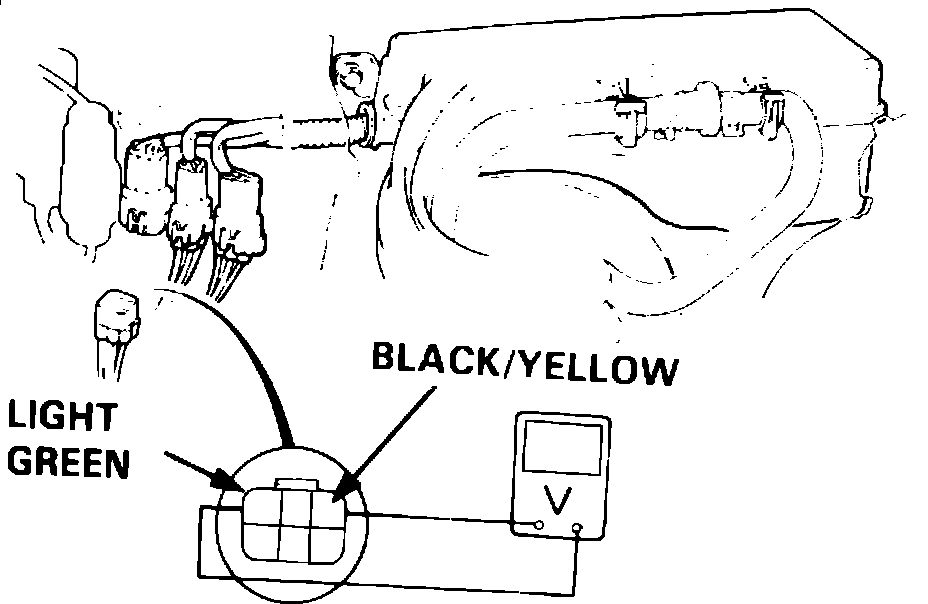

Pressure Regulator Cut-Off Solenoid Valve
Fig. 64 Connector Terminal Identification:

Legend
When performing the following test, ensure that engine coolant temperature is above 221°F, and that intake air temperature is above 176°F.
1. Disconnect 6 pin connector in engine compartment, then connect positive lead of voltmeter to black/yellow wire terminal and negative lead to light green terminal, Fig. 32. If no voltage is present, proceed to next step. If voltage is present, replace solenoid valve and retest.
2. Connect positive lead of voltmeter to black/yellow wire terminal and negative lead to body ground, then restart engine and observe voltmeter within one minute of restart. If no voltage is present, repair open in black/yellow wire between solenoid valve and fuse. If voltage is present, check for open in light green wire between solenoid valve and ECU. If wire is OK, check ECU for proper operation.
3. Start engine, then disconnect solenoid valve vacuum hose at intake manifold and check for vacuum. If no vacuum is present, check vacuum port for obstruction. If vacuum is present, check hose for blockage, cracks or improper connection. If hose is OK, reconnect and proceed to next step.
4. Disconnect 6 pin connector in engine compartment, then connect positive lead of voltmeter to black/yellow wire terminal and negative lead to light green terminal, Fig. 64, and check for voltage.
5. If voltage is present, check for short in light green wire between solenoid valve and ECU. If wire is OK, check ECU for proper operation.
6. If no voltage is present, replace solenoid valve and retest.